Points
The point geom is used to create scatterplots. The scatterplot is most
useful for displaying the relationship between two continuous variables.
It can be used to compare one continuous and one categorical variable, or
two categorical variables, but a variation like geom_jitter,
geom_count, or geom_bin2d is usually more
appropriate.
geom_point(mapping = NULL, data = NULL, stat = "identity", position = "identity", ..., na.rm = FALSE, show.legend = NA, inherit.aes = TRUE)
Arguments
| mapping | Set of aesthetic mappings created by |
|---|---|
| data | The data to be displayed in this layer. There are three options: If A A |
| stat | The statistical transformation to use on the data for this layer, as a string. |
| position | Position adjustment, either as a string, or the result of a call to a position adjustment function. |
| ... | other arguments passed on to |
| na.rm | If |
| show.legend | logical. Should this layer be included in the legends?
|
| inherit.aes | If |
Details
The bubblechart is a scatterplot with a third variable mapped to the size of points. There are no special names for scatterplots where another variable is mapped to point shape or colour, however.
Overplotting
The biggest potential problem with a scatterplot is overplotting: whenever
you have more than a few points, points may be plotted on top of one
another. This can severely distort the visual appearance of the plot.
There is no one solution to this problem, but there are some techniques
that can help. You can add additional information with
geom_smooth, geom_quantile or
geom_density_2d. If you have few unique x values,
geom_boxplot may also be useful.
Alternatively, you can
summarise the number of points at each location and display that in some
way, using geom_count, geom_hex, or
geom_density2d.
Another technique is to make the points transparent (e.g.
geom_point(alpha = 0.05)) or very small (e.g.
geom_point(shape = ".")).
Aesthetics
geom_point understands the following aesthetics (required aesthetics are in bold):
xyalphacolourfillgroupshapesizestroke
Examples
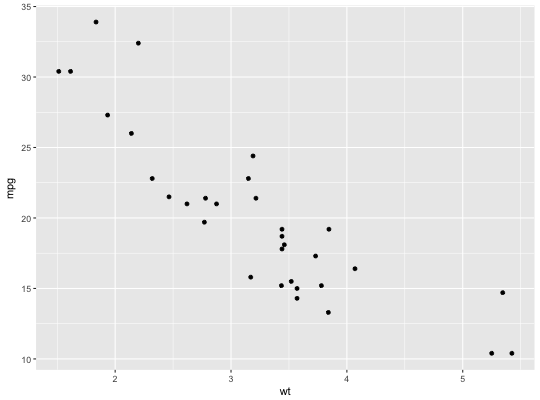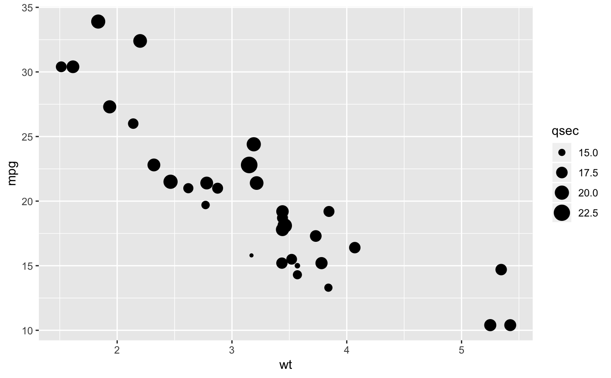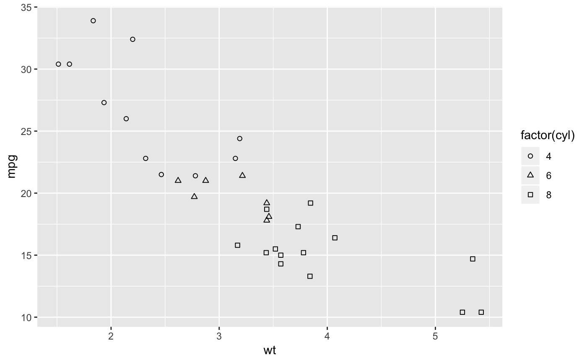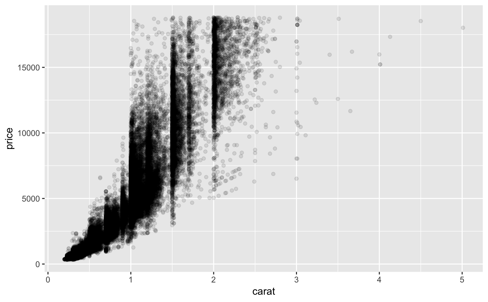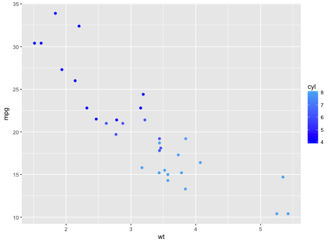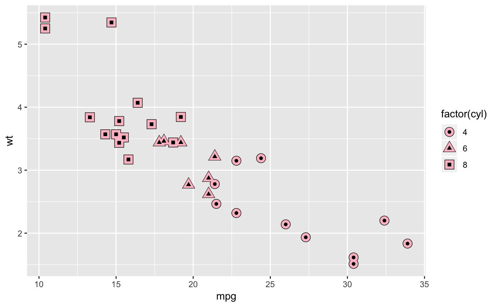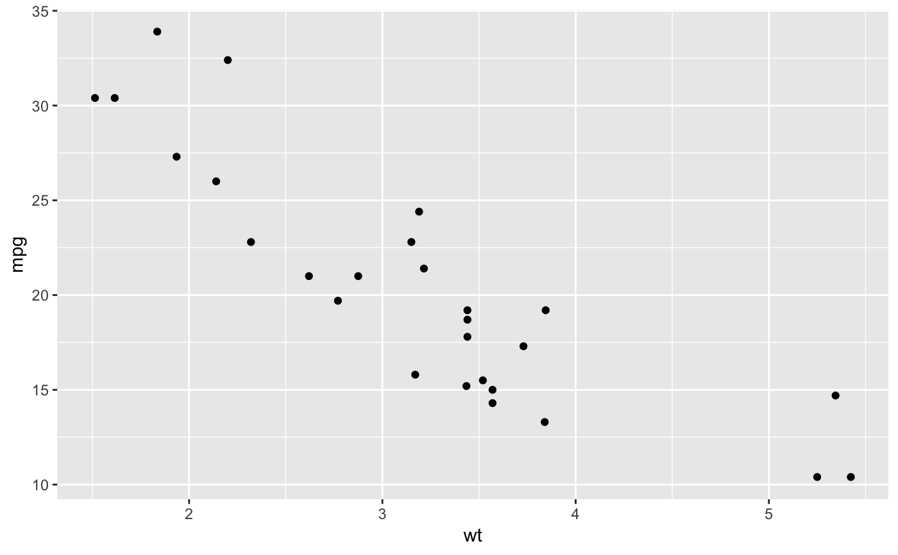# Varying alpha is useful for large datasets d <- ggplot(diamonds, aes(carat, price)) d + geom_point(alpha = 1/10)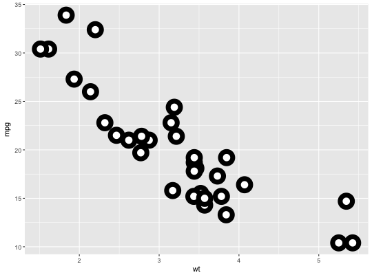d + geom_point(alpha = 1/20)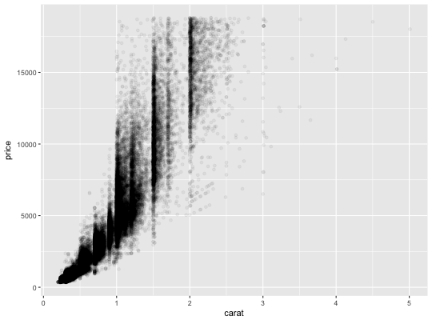d + geom_point(alpha = 1/100)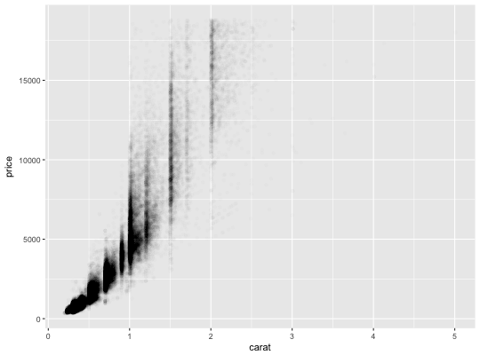# For shapes that have a border (like 21), you can colour the inside and # outside separately. Use the stroke aesthetic to modify the width of the # border ggplot(mtcars, aes(wt, mpg)) + geom_point(shape = 21, colour = "black", fill = "white", size = 5, stroke = 5)# You can create interesting shapes by layering multiple points of # different sizes p <- ggplot(mtcars, aes(mpg, wt, shape = factor(cyl))) p + geom_point(aes(colour = factor(cyl)), size = 4) + geom_point(colour = "grey90", size = 1.5)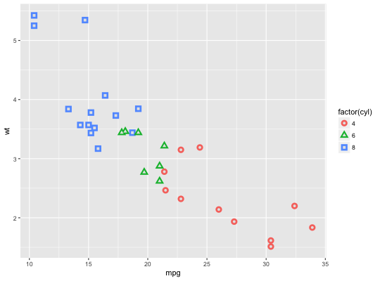p + geom_point(colour = "black", size = 4.5) + geom_point(colour = "pink", size = 4) + geom_point(aes(shape = factor(cyl)))# These extra layers don't usually appear in the legend, but we can # force their inclusion p + geom_point(colour = "black", size = 4.5, show.legend = TRUE) + geom_point(colour = "pink", size = 4, show.legend = TRUE) + geom_point(aes(shape = factor(cyl)))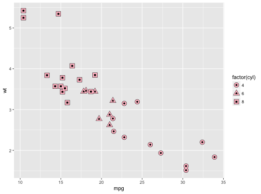# geom_point warns when missing values have been dropped from the data set # and not plotted, you can turn this off by setting na.rm = TRUE mtcars2 <- transform(mtcars, mpg = ifelse(runif(32) < 0.2, NA, mpg)) ggplot(mtcars2, aes(wt, mpg)) + geom_point()#> Warning: Removed 6 rows containing missing values (geom_point).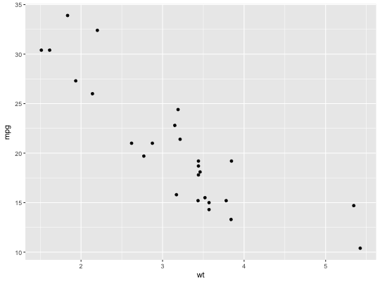